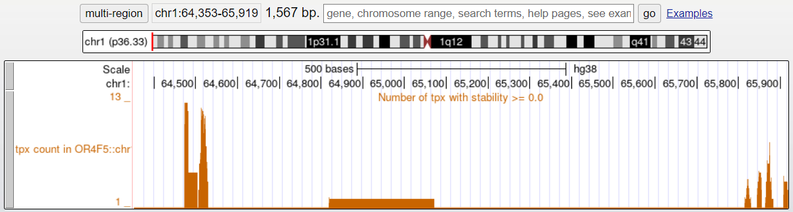

<div class="homepageContainer">
    <mat-card class="homePageCard">
        <h1>About 3plex</h1>
        
        <hr/>
        <section>
            3plex is a software that predict the interaction between a single strand RNA with a double strand DNA region through triple helix formation.
            <br><br>
            3plex integrates the state-of-the-art algorithm for triplex identification with relevant biophysical knowledge on triplex structures: thermal stability derived from triplex denaturation experiments and RNA secondary structure prediction.
            <br><br>
            <mat-accordion>
                <mat-expansion-panel style="width: 100%;" class="mat-elevation-z0">
                    <mat-expansion-panel-header>
                        <mat-panel-title>
                            <span class="right">See more about 3plex</span>
                        </mat-panel-title>
                    </mat-expansion-panel-header>
                    
                        
                    The PATO algorithm <a href="https://academic.oup.com/bioinformatics/article/39/3/btad134/7078802" target="_blank">(Amatria-Barral et al., 2023)</a> scans a couple of nucleotide sequences and returns all the triplexes that satisfy a set of user-defined constraints.
                    <br><br>
                    3plex enables the exclusion of ssRNA nucleotides from the search based on the secondary structure prediction performed with RNAplfold from the ViennaRNA package <a href="https://almob.biomedcentral.com/articles/10.1186/1748-7188-6-26" target="_blank">(Lorentz et al., 2011)</a>. Theoretically, a triplex interaction requires a stretch of nucleotides on the ssRNA transcript not to be involved in any further hydrogen bond.
                    <br><br>
                    The identified putative triplexes are evaluated according to their thermal stability derived from the LongTarget collection of triplex denaturation experiments <a href="https://www.researchgate.net/publication/266249301_LongTarget_A_tool_to_predict_lncRNA_DNA-binding_motifs_binding_sites_via_Hoogsteen_base-pairing_analysis" target="_blank">(He et al., 2015)</a>.
                    <br><br>
                    Extensive description of the tool can be found in our paper:
                    <div id="paper_ref">
                        3plex enables deep computational investigation of triplex forming lncRNAs.
                        Cicconetti C, Lauria A, Proserpio V, Masera M, Tamburrini A, Maldotti M, Oliviero S, Molineris I.
                        Comput Struct Biotechnol J. 2023 May 17;21:3091-3102. doi: <a href="https://www.sciencedirect.com/science/article/pii/S2001037023001988">10.1016/j.csbj.2023.05.016</a>. PMID: <a href="https://pubmed.ncbi.nlm.nih.gov/37273849/">37273849</a>; PMCID: PMC10236371.
                    </div>
                </mat-expansion-panel>
            </mat-accordion>
        </section>
        <section>
            <h2>Remote job execution</h2>
            3plex platform allows the user to access the 3plex tool remotely, submitting jobs to our server, and to access the results.
        </section>
        <section>
            <h2>Data visualization</h2>
            Once your job is completed, results can be interactively visualized on the platform.
            <br>
            

            <p class="subtitle">TTS count<p></p>
            <div class="subsection">
                    The TTS count plot shows the number of triplexes found in each position of the ssRNA sequence.
                    <br>
                    The color indicates the <strong>maximum stability</strong> between the TPX formed at each point.
                    The <strong>Min Stability Threshold</strong> slider allows to filter out TPXs with stability lower than the value specified.
                    <br>
                    Optionally, if <strong>randomization</strong> of the dsDNA track is enabled, the <strong>average</strong> and the <strong>quartiles</strong> of the 
                    number of TPXs on randomized sequences are shown on top of the TTS count plot, as well as a <strong>p-value</strong> track. 
                    The p-value is calculated as the probability of obtaining the same or higher number of TPXs on randomized sequences.
            </div>
            
            <p class="subtitle">Secondary structure<p></p>
            <div class="subsection">
                The secondary structure plot shows the secondary structure prediction performed with RNAplfold from the ViennaRNA package <a href="https://almob.biomedcentral.com/articles/10.1186/1748-7188-6-26" target="_blank">(Lorentz et al., 2011)</a>
                defined as the probability, for each nucleotide, that a window of length 8 centred on that position is single stranded.
            </div>
            <p class="subtitle">Conservation and repeats<p></p>
            <div class="subsection">
                If ssRNA was specified as a transcript, a phylogenetic conservation score and eventual repeats are shown <a href="https://pubmed.ncbi.nlm.nih.gov/19858363/" target="_blank">(Pollard et al., 2011)</a>.
            </div>
            
            <p class="subtitle">dsDNA sequences table<p>
            <div class="subsection">
                If <strong>the target dsDNA was specified in bed format</strong>, a table is provided, allowing to view, search and filter sequences.
                <br>
                
                <br><br>
                By clicking selecting a sequence on the table, the results are restricted to this specific sequence. 
                On the restricted results, additional options are available:
                <ul>
                    <li>
                        <strong>Open in genome browser</strong>: allows to view the TTS count on the dsDNA sequence instead of the ssRNA sequence, on the genome browser.
                    </li>
                    
                    <li>
                        <strong>All TPX table</strong>: a table with all TPXs is provided.
                    </li>
                </ul>
            </div>

            <p class="subtitle">DBD specification and visualization<p>
            <div class="subsection">
                The system allows to select regions of interest on the ssRNA sequence.
                <div style = "display: flex; flex-direction: row; align-items: center; justify-content: center; width: 100%;">
                    
                    
                </div>
                In the DBD view, the table with all TPXs is shown, with the possibility of exporting it in xls, as well as the p-value for the specific region, if randomization was ON.
                <div style = "display: flex; flex-direction: row; align-items: center; justify-content: center; width: 100%;">
                    
                    
                </div>
            </div>
            </section>
    </mat-card>
</div>